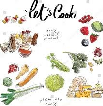

Pilihan Makanan
Diet Sehat
Sebenarnya ada banyak makanan sehat yang dapat Anda konsumsi selama diet.
Beberapa contoh di
bawah ini mungkin bisa jadi referensi Anda.
1. OATMEAL
Oatmeal adalah salah satu makanan sehat yang paling sering dikonsumsi saat diet. Hal
ini karena oatmeal termasuk makanan yang mengandung serat tinggi dan punya indeks glikemik
rendah.
Kandungan protein, magnesium, fosfor, dan vitamin B1 dalam oatmeal juga berfungsi untuk
menghasilkan
energi sehingga membuat Anda tetap bersemangat untuk menjalani aktivitas.
Selain membantu menurunkan berat badan, oatmeal juga dapat membantu menjaga kadar kolesterol
serta
gula darah agar tetap normal. Itu sebabnya, untuk menu sarapan program diet Anda, oatmeal bisa
jadi
pilihan yang tepat.
2. APEL
Apel merupakan salah satu buah yang paling banyak disukai orang ketika sedang diet.
Buah berwarna merah atau hijau ini memang memiliki kandungan zat gizi yang baik dan mampu
membantu
usaha Anda dalam menurunkan timbangan berat badan.
Satu buah apel (kira-kira 100 gram) diketahui mengandung 95 kalori, yang sebagian besarnya
berasal
dari kandungan karbohidrat di dalamnya. Meski tinggi kalori, apel merupakan buah yang bebas
lemak,
natrium, dan kolesterol. Buah ini juga kaya air karena 86 persen kandungan apel adalah air.
Sementara serat yang terkandung di dalamnya adalah serat larut air yang ampuh membuat Anda tahan
lapar lebih lama. Ini artinya, Anda bisa jadikan apel sebagai selingan untuk makanan diet sehat
di
sela-sela waktu makan, supaya mencegah Anda mengonsumsi makanan dalam jumlah yang berlebihan.
3. PUTIH TELUR
Protein yang ditemukan dalam putih telur adalah protein kompleks yang berkualitas yang
tinggi. Protein kompleks sendiri mengandung semua asam amino esensial yang dibutuhkan tubuh.
Ditambah lagi, makanan diet sehat ini tidak punya nilai indeks glikemik, karena tak memiliki
kandungan karbohidrat, sehingga penderita diabetes bisa dengan aman mengonsumsi putih telur.
Protein yang ditemukan dalam putih telur adalah protein kompleks yang berkualitas yang tinggi.
Protein kompleks sendiri mengandung semua asam amino esensial yang dibutuhkan tubuh. Ditambah
lagi,
makanan diet sehat ini tidak punya nilai indeks glikemik, karena tak memiliki kandungan
karbohidrat,
sehingga penderita diabetes bisa dengan aman mengonsumsi putih telur.
4. BROKOLI
Brokoli bisa Anda andalkan sebagai salah satu makanan diet sehat. Hal ini karena
brokoli rendah kalori namun kaya akan vitamin, serat, serta mineral. Bayangkan, satu gelas yang
penuh dengan potongan brokoli hanya mengandung 30 kalori saja. Sementara untuk kandungan serat,
brokoli memiliki serat sebanyak 5 gram yang dapat membantu Anda kenyang seharian.
Tidak hanya itu, sayur ini juga mampu membantu mengendalikan kadar gula darah.
5. IKAN
Selain berbagai jenis makanan yang sudah disebutkan di atas, Anda juga dapat
mengonsumsi ikan sebagai makanan diet sehat. Kandungan lemak baik omega-3 dalam ikan dapat
membantu
Anda menurutkan berat badan, loh! Biasanya, lemak ini ada di dalam ikan perairan laut dalam
seperti,
salmon, tuna, san makarel.
Selain itu, sebuah penelitian yang dilakukan di Swedia mengungkapkan bahwa orang yang menu makan
malamnya adalah ikan cenderung terbiasa makan lebih sedikit keesokan harinya ketimbang orang
yang
makan daging.
Agar manfaat ikan ini lebih optimal, sebaiknya hindari mengonsumsi ikan dengan cara digoreng.
Alih-alih menurunkan berat badan, tambahan minyak trans justru akan menyumbang lebih banyak
lemak di
tubuh Anda.